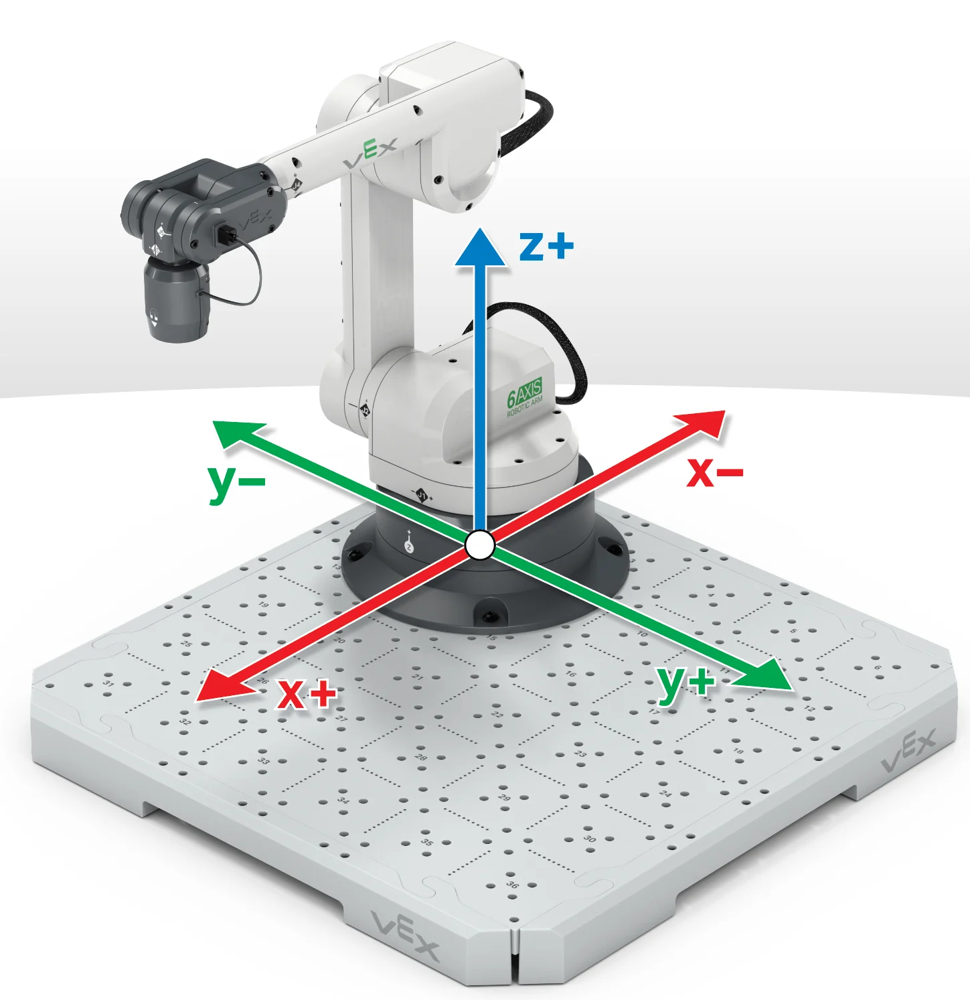

📍 UT3
Localización Espacial del Robot
Representación de posiciones, orientaciones y simulación cinética aplicada a la robótica.


Representación de posiciones, orientaciones y simulación cinética aplicada a la robótica.
La localización espacial permite determinar la posición y orientación de un robot dentro de un entorno determinado.
Esta información es esencial para que el robot pueda desplazarse, manipular objetos y ejecutar tareas con precisión.
Los sistemas de referencia constituyen la base para describir matemáticamente la ubicación de un robot.
Las coordenadas cartesianas utilizan los ejes X, Y y Z para representar posiciones.
Las coordenadas polares utilizan distancia y ángulo.
Los sistemas cilíndricos y esféricos permiten representar movimientos tridimensionales complejos.
Las matrices de rotación son herramientas matemáticas que permiten representar cambios de orientación.
Estas matrices describen giros alrededor de los ejes X, Y y Z.
La composición de rotaciones permite obtener orientaciones complejas mediante la combinación de varias transformaciones.
La representación gráfica permite visualizar la posición y orientación de un robot dentro de un espacio tridimensional.
Mediante gráficos y diagramas es posible analizar trayectorias, desplazamientos y configuraciones espaciales.
Estas herramientas facilitan la comprensión de conceptos complejos relacionados con el movimiento robótico.
Los simuladores robóticos permiten modelar y analizar el comportamiento de un robot antes de construirlo físicamente.
Estas herramientas reducen costos, disminuyen errores y optimizan los procesos de diseño.
La simulación constituye una etapa fundamental para validar trayectorias, movimientos y algoritmos de control.